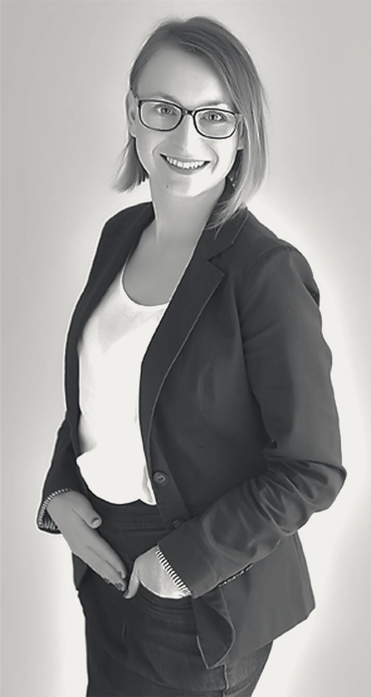

Chcę się rozwieść, ustalić alimenty albo kontakty z dzieckiem.
Prawo rodzinne
- rozwód z orzeczeniem o winie i bez, separacja
- alimenty na dziecko i na małżonka
- władza rodzicielska, kontakty z małoletnimi, podział majątku wspólnego
Kancelaria Adwokacka w Pruszkowie
Pacta sunt servanda.
Umów należy dotrzymywać — dlatego pilnujemy, żeby każde zdanie umowy, ugody i pisma znaczyło dokładnie to, co ma znaczyć.
ul. Kraszewskiego 17, Pruszków · pn. i czw. do 18:00
Nie trzeba znać nazwy przepisu. Wystarczy opisać, co się stało — resztą zajmujemy się my: od porady i pisma po reprezentację przed sądem, organem administracji i organem egzekucyjnym.
Chcę się rozwieść, ustalić alimenty albo kontakty z dzieckiem.
Prawo rodzinne
Zmarł ktoś bliski i trzeba uregulować spadek albo zachowek.
Prawo spadkowe
Chodzi o działkę, odszkodowanie albo pieniądze, których ktoś nie oddaje.
Prawo cywilne
Prowadzę firmę i potrzebuję kogoś, kto czyta umowy, zanim je podpiszę.
Prawo gospodarcze
Pracodawca nie wypłaca wynagrodzenia albo wadliwie mnie zwolnił.
Prawo pracy i ZUS
Dostałem wezwanie albo akt oskarżenia — albo to mnie skrzywdzono.
Prawo karne
W sprawach wymagających innych specjalizacji kancelaria współpracuje z adwokatami, radcami prawnymi, doradcami podatkowymi, rzecznikami patentowymi, biegłymi rewidentami i notariuszami.
Trzy rzeczy ustalamy na samym początku, żeby nie było niespodzianek ani co do szans, ani co do kosztów.

Trzy kroki, zanim cokolwiek trafi do sądu. Na konsultację można przyjść do kancelarii albo umówić się telefonicznie.
Ustalamy stan faktyczny i oceniamy szanse. Konsultacja jest odpłatna, a jej koszt zaliczamy na poczet wynagrodzenia, jeśli podejmujemy się sprawy.
Przedstawiamy zakres pracy i wynagrodzenie. Dopiero po akceptacji podpisujemy pełnomocnictwo i przejmujemy korespondencję w sprawie.
Reprezentacja przed sądem, organami administracji i organami egzekucyjnymi, z bieżącą informacją po każdej rozprawie i każdym piśmie.
prowadzę kancelarię adwokacką w Pruszkowie. Zajmuję się sprawami cywilnymi i gospodarczymi — w szczególności odpowiedzialnością za szkodę, sprawami majątkowymi i naruszeniami zobowiązań umownych — a także sprawami spadkowymi, rodzinnymi i małżeńskimi.
Doświadczenie zdobywałam w kancelarii adwokackiej, w kancelarii radcy prawnego oraz w dużej firmie telekomunikacyjnej. Dlatego pomagam zarówno osobom prywatnym, jak i przedsiębiorcom, którym zapewniam stałą obsługę prawną.
Sabina Pikulaadwokat
Przyjęcia w kancelarii
| Poniedziałek | 9:00 – 18:00 |
| Wtorek | 9:00 – 16:00 |
| Środa | 9:00 – 16:00 |
| Czwartek | 9:00 – 18:00 |
| Piątek | 9:00 – 14:00 |
Inny, dogodny termin można umówić telefonicznie.
Konsultacja jest odpłatna, a jej koszt zaliczamy na poczet wynagrodzenia, jeśli podejmujemy się sprawy. Wynagrodzenie — ryczałt za sprawę albo stawkę godzinową — przedstawiamy na piśmie, zanim podpiszemy pełnomocnictwo.
Nie zawsze. Konsultacje odbywają się w kancelarii przy ul. Kraszewskiego 17 albo telefonicznie. Termin najprościej ustalić, dzwoniąc pod 601 130 842.
Wszystko, co dotyczy sprawy: pisma z sądu lub urzędu (z kopertą, bo liczy się data doręczenia), umowy, korespondencję i notatkę z najważniejszymi datami. Im pełniejszy obraz, tym konkretniejsza porada.
Tak. Najczęściej w Pruszkowie, Warszawie i okolicach, a sprawy przed sądami w innych miastach — po wcześniejszym ustaleniu.
Tak. Bieżąca obsługa przedsiębiorców: umowy handlowe, sprawy w KRS, uchwały i protokoły organów spółek, regulaminy pracy i windykacja należności.
Adwokat Sabina Pikula — od pierwszej rozmowy do prawomocnego wyroku. W sprawach wymagających innych specjalizacji kancelaria współpracuje z doradcami podatkowymi, notariuszami i biegłymi.
Obszar działania: Pruszków, Warszawa i okolice. Konsultacje w kancelarii i telefonicznie.